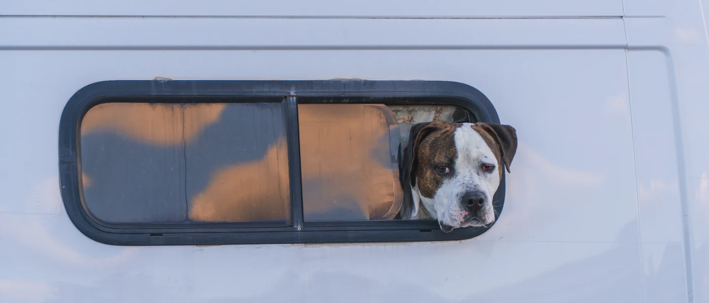

Photography
Selected photographs
A curated selection from the full photo library.





Photographs by Jipeng Li.
Get in touch ↗Photography
A curated selection from the full photo library.

Photographs by Jipeng Li.
Get in touch ↗